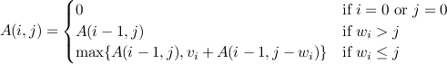

Dinamik programlamaya giriş
Alttaki yazı Jesse Farmer'ın "Introduction to Dynamic Programming" adlı yazısının çevirisidir. Burada, yazarın izniyle yayınlanmaktadır.
Dinamik programlama, örtüşen altproblemler (overlapping subproblems) ve eniyi altyapı (optimal substructure) özelliklerini gösteren geniş bir yelpazedeki arama ve eniyileme (optimizasyon) problemlerini verimli bir biçimde çözmek için kullanılan bir yöntemdir. Size bazı basit örnekler aracılığıyla bu özellikleri göstermeye çalışacağım ve bir alıştırma ile bitireceğim. Mutlu kodlamalar!
Örtüşen altproblemler
Tekrar tekrar kullanılan altproblemlere bölünebilen bir problem için, örtüşen altproblemlere sahiptir denir. Özyineleme (recursion) ile yakından ilişkilidir. Farkı görmek için (Python ile) şu şekilde tanımlanan faktöryel fonksiyonunu düşünün:
def factorial(n):
if n == 0: return 1
return n*factorial(n-1)
Görüldüğü gibi factorial(n) probleminin hesabı factorial(n-1) altprobleminin hesabına bağımlıdır. Bu problem örtüşen altproblemler özelliğini göstermez çünkü factorial, n'den daha küçük her pozitif tamsayı için bir kez çağrılır.
Fibonacci Sayıları
Öte yandan, n. Fibonacci sayısının hesaplanması örtüşen altproblemler özelliğini gösterir. Saf (naive) özyinelemeli kodlama şöyle olacaktır
def fib(n):
if n == 0: return 0
if n == 1: return 1
return fib(n-1) + fib(n-2)
fib(n)'in hesaplanması problemi hem fib(n-1)'e hem de fib(n-2)'ye bağımlıdır. Bu altproblemlerin nasıl örtüştüğünü görmek için fib(5)'i hesaplamaya çalışırken fib'in kaç kez ve hangi argümanlarla çağrıldığına bir bakın:
fib(5) fib(4) + fib(3) fib(3) + fib(2) + fib(2) + fib(1) fib(2) + fib(1) + fib(1) + fib(0) + fib(1) + fib(0) + fib(1) fib(1) + fib(0) + fib(1) + fib(1) + fib(0) + fib(1) + fib(0) + fib(1)
k. aşamada, yalnızca fib(k-1) ve fib(k-2)'nin değerlerine ihtiyaç duyarız, fakat, her birini birçok kez çağırmışızdır. Kuru kalabalığı azaltmak için sondan başlayıp yukarı çıkarak bir sonraki aşamada gerekli sayıları hesaplayabiliriz.
def fib2(n):
n2, n1 = 0, 1
for i in range(n):
n2, n1 = n1, n1 + n2
return n2
fib fonksiyonu Büyük-O gösteriminde O(cn) zaman alırken (yani n'ye göre üssel iken) fib2 fonksiyonu O(n) zaman alır. Eğer bu çok soyut geldiyse, fib ve fib2'ye karşılık girdi parametresinin gösterildiği çalışma zamanlarını (milisaniye cinsinden) karşılaştıran alttaki grafiğe bir göz atın.
Üstteki problem nispeten kolay ve çoğu programcı için özyineleme ve yineleme (iteration) karşılaştırmasında yapılan ilk alıştırma örneklerinden biri. Birçok kez Finonacci örneğinin, insanları, özyinelemenin doğası gereği yavaş olduğuna inandırdığını gördüm. Bu doğru değil. Bir problemi üstteki tekniği kullanarak, örtüşen altproblemler ile özyinelemeli tanımlayabildiğimiz durumlarda çalışma zamanı her durumda azalır.
Şimdi de, dinamik programlamanın ikinci özelliğine bakalım: eniyi altyapı.
Eniyi altyapı
Global çözüm altproblemlerdeki yerel eniyi çözümlerden inşa edilebiliyorsa, böyle bir problem için eniyi altyapıya sahiptir denir. Eniyi altyapının rol aldığı genel problem yapıları şuna benzerdir: Diyelim ki A'yı çağıran bir takım nesneler var. A'daki her n nesnesinin bir "masraf"ı var, m(n). Sizden istenilen (belki de bazı kısıtlamaları göz önünde bulundurarak) A'nın maksimum (ya da minimum) masraflı altkümesini bulmak.
Kaba-kuvvet yöntemi (brute-force method), A'nın her altkümesini oluşturmak, masrafını hesaplamak, sonra da bunların maksimumunu (ya da minimumunu) bulmak olacaktır. Fakat A'nın n elemana sahip olduğunu ve A üstünde kısıt olmadığı durumda, arama uzayımızın 2n boyutunda olacağını unutmayın. Çoğunlukla n değeri, kaba kuvvet yönteminin hesaplamaya elverişli olmayacağı çok büyük bir değerdir. Bir örnekte irdeleyelim.
Maksimum Altdizi Toplamı (Maximum Subarray Sum)
Diyelim ki bir tamsayı dizisi verilmiş olsun. Hangi (bitişik) altdizi en yüksek toplamı verir? Örneğin, dizimiz [1,2,-5,4,7,-2] ise en yüksek toplama sahip altdizi toplamı 11 eden [4,7]'dir. İlk bakışta bu problemin, toplamı maksimuma çıkaracak (eğer varsa) tamamı pozitif tamsayılardan oluşan altdiziyi bulma problemine indirgendiği düşünülebilir. Fakat [1,5,-3,4,-2,1] dizisini bir düşünün. Toplamı 7 eden [1, 5, -3, 4] altdizisi en yüksek toplama sahiptir.
İlk önce kaba-kuvvet yaklaşımına bakalım. Problemdeki kısıtlar sebebiyle (bahsi geçen altdiziler bitişik elemanlardan oluşmalı) yalnızca O(n2) altdiziye bakmalıyız (neden?). İşte, Python'da yazılmış hali burda:
def msum(a):
return max([(sum(a[j:i]), (j,i)) for i in range(1,len(a)+1) for j in range(i)])
Bu fonksiyon hem toplamı, hem de altdizinin başlangıç/bitiş indekslerini döndürür. Şimdi eniyi altyapıyı bulup bulamayacağımıza bir bakalım.
a girdisi verilmiş olsun. Python gösterimini kullanacağım, o halde a[0:k] 0'dan başlayıp k-1'e kadarki tüm elemanları içeren altdizidir. a[0:i] için en yüksek toplamı veren altdiziyi ve bu toplamı bildiğinizi varsayalım. Sadece bu bilgiyi kullanarak a[0:i+1] için çözümü bulabilir miyiz?
Eniyi altdizi a[j:k+1], en yüksek toplam s ve a[j:i]'nin toplamı da t olsun. Eğer t+a[i], s'den büyükse a[j:i+1]'i eniyi altdizi olarak seç ve s'yi t olarak güncelle. Eğer t+a[i] negatifse, a[j:i+1]'i içinde bulunduran bir altdizinin bulundurmayana göre daha küçük toplama sahip olacağından dolayı bitişiklik kısıtı bize a[j:i+1]'in eniyi altdizide olmaması gerektiğini söyler. Öyleyse, t+a[i] negatifse, t=0 olarak ata ve eniyi altdizinin sol sınırını i+1 olarak seç.
Gözünüzde canlandırmak için [1,2,-5,4,7,-2] dizisini düşünün.
s = -sonsuz, t = 0, j = 0, sınırlar= (0,0) (1 2 -5 4 7 -2 (1)| 2 -5 4 7 -2 (t=1. t > s olduğu için s=1 ve sınırlar = (0,1)) (1 2)|-5 4 7 -2 (t=3. t > s olduğu için s=3 ve sınırlar = (0,2)) 1 2 -5(| 4 7 -2 (t=-2. t < 0 olduğu için t=0 ve j = 3 ) 1 2 -5 (4)| 7 -2 (t=4. t > s olduğu için s=4 ve sınırlar = (3,4)) 1 2 -5 (4 7)|-2 (t=11. t > s olduğu için s=11 ve sınırlar = (3,5)) 1 2 -5 (4 7) -2| (t=9. t < s olduğu için değişiklik yok)
Her aşamada 3 değişkenin değeri tutulur (sol sınırdan şu anki noktaya kadar olan toplam (t), en yüksek toplam (s) ve şu ana kadar bulunan eniyi altdizinin sınırları (bounds)) ve diziden bir kere geçiş yapılır. Python'da:
def msum2(a):
bounds, s, t, j = (0,0), -float('infinity'), 0, 0
for i in range(len(a)):
t = t + a[i]
if t > s: bounds, s = (j, i+1), t
if t < 0: t, j = 0, i+1
return (s, bounds)
Bu problemde "global eniyi" çözüm, global en yüksek toplama sahip altdizi ile ilişkilidir, her aşamada o ana kadar gördüklerimizi kullanarak karar veririz. Yani her aşamada, o ana kadarki en iyi sonucu biliriz fakat bir sonraki aşamaya geçmeden bu aşamada gördüklerimizle değerlendirip değiştirebiliriz. Problemin eniyi altyapı özelliğine sahip olması budur. Yerel olarak karar verdiğimiz için, listeyi bir kez taramamız yeterlidir. Böylelikle problemi O(n2) yerine O(n) çalışma zamanında çözeriz. Yine bir grafik:
Sırtçantası (Knapsack) Problemi
Haydi şimdi de şu ana kadar öğrendiklerimizi biraz daha ilgi çekici bir probleme uygulayalım. Hırsızın dik âlâsısınız ve bir yolunu bulup Chicago Sanat Enstitüsü'nün izlenimci kanadına girdiniz. Malum, her şeyi alamazsınız. Şöyle bir kısıtınız var, yalnızca sırtçantanızın kaldırabileceği kadar şey alabilirsiniz. Diyelim ki çantanız W kg. taşıyabiliyor. Her bir parçanın piyasa fiyatını da biliyorsunuz. W kg. kısıtında en çok para kazandıracak şekilde hangi parçaları koyarsınız?
Şimdi bu problemin hem örtüşen altproblemler özelliğine hem de eniyi altyapı özelliğine nasıl sahip olduğuna bir bakalım. Diyelim ki w1,...,wn ağırlıklarında n adet resim var ve değerleri v1,...,vn. İlk i parçadan toplamları j kg.'ı geçmeyecek şekilde seçilenleri hesaba kattığımızda elde edilen maksimum değeri A(i,j) olarak tanımlayalım.
Her i≤n ve j≤W için A(0,j)=0 ve A(i,0)=0 olacağı barizdir. Eğer wi>j ise A(i,j)=A(i-1, j) çünkü i. elemanı ekleyemeyiz. Öte yandan, eğer wi≤j ise bir karar vermemiz lazım: yeni elemanı ekle ya da ekleme. Eğer eklemezsek, değer yine A(i-1, j) olacak. Fakat eğer eklersek yeni değer vi+A(i-1, j-wi) olacak. Hangini seçmeliyiz? Hmm, hangisi daha büyükse onu tabii ki.
Formal biçimde tanımlarsak, alttaki özyinelemeli fonksiyonu elde ederiz

Bu problem iki özelliği de gösterir, dolayısıyla dinamik programlama için iyi bir adaydır. Altproblemler örtüşür çünkü her (i,j) aşamasında birçok k < i and l < j değeri için A(k,l) hesabına gereksinim vardır. En iyi altyapı özelliğine sahibizdir çünkü her aşamada yalnızca o andaki eldeki bilgi yeterlidir.
Özyinelemeli çözümü kodlamak zor sayılmaz:
def A(w, v, i, j):
if i == 0 or j == 0: return 0
if w[i-1] > j: return A(w, v, i-1, j)
else: return max(A(w, v, i-1, j), v[i-1] + A(w, v, i-1, j-w[i-1]))
Unutmayın ki bize A(n,W)'nun hesabı lazım. Bunun için (i,j) hücresinde A(i,j) değerini bulunduran n x W boyutunda bir tabloya ihtiyaç duyacağız. A(i,j) değerini ilk hesaplayışımızda tablodaki yerine yazacağız. Bu tekniğe hatırlama (memoization) denir ve örtüşen altproblemleri işlemede kullanılır. Ruby'de memoize adında bu işi yapan bir modül bulunmaktadır.
Her aşamada A(i,j)'yi hesaplamak için özyineleme fomülünü uygulayarak tüm i≤n ve j≤W değerlerini gezeriz, fakat A()'yı tekrar tekrar hesaplamak yerine hatırlama tablomuzu kullanırız ve böylece eniyi altyapıyı gözönünde bulundururuz. Bu bize O(nW) zaman ve O(nW) hafıza kullanan bir çözüm üretir ve istediğimiz değer tablonun (n,W) hücresindedir.
Her Gün Dinamik Programlama
Üstteki örnekler dinamik programlamanın dar bir problem yelpazesi için geliştirilmiş bir teknik gibi gözükmesine sebep olabilir. Fakat geniş bir yelpazeye sahip birçok algoritma dinamik programlamayı kullanır. Size kısmi bir liste:
- Biyoenformatikte kullanılan Needleman-Wunsch algoritması.
- Formal diller teorisi ve doğal dil işlemede kullanılan CYK algoritması.
- Saklı Markov modellerinde (hidden Markov models) kullanılan Viterbi algoritması.
- Yazım yanlışı kontrolünde kelimeler arası uzaklık tanımı için kullanılan Levenstein uzaklığı.
- Kriket (cricket) sporunda kullanılan D/L yöntemi.
Bugünlük bu kadar. Hoşça kalın!


{kind=link}
{kind=link}
1 yorum
Merhaba . Güzel bir çeviri yapmışsınız . Teşekkürler.